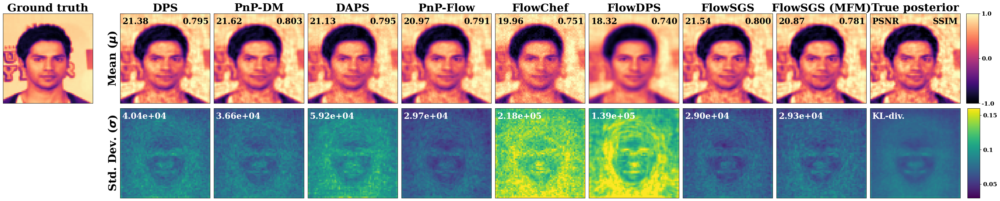
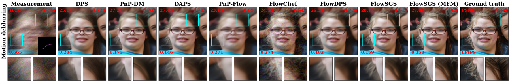
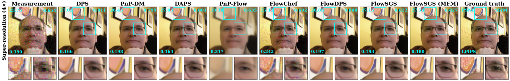
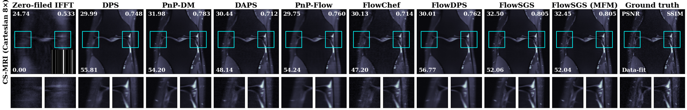
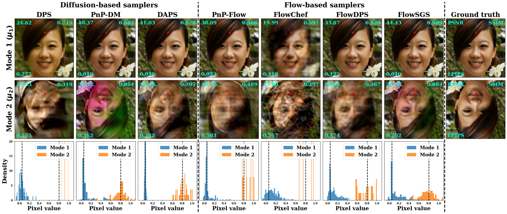
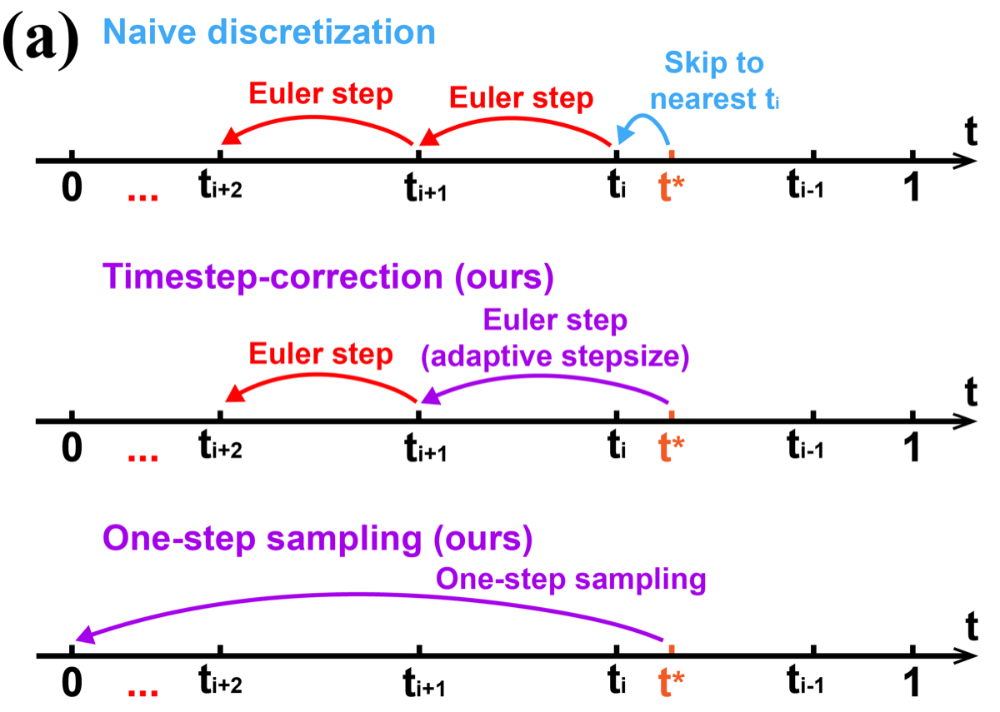
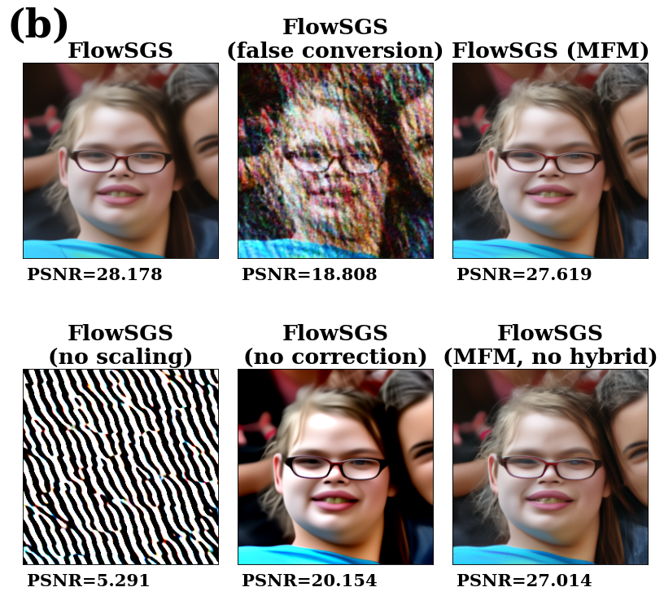
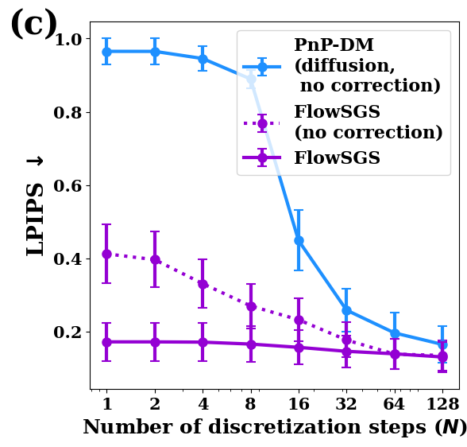

Flow matching has emerged as the state-of-the-art generative model and has been used for plug-and-play (PnP) priors to solve inverse problems in computational imaging. However, existing flow-based inverse solvers make simplifying approximations in posterior sampling and/or assume linear forward models. In contrast, principled diffusion-based methods exist but are computationally expensive. To circumvent these problems, we introduce FlowSGS, a flow-based posterior sampling method using Split Gibbs Sampling (SGS) with annealed coupling, and make flow-specific interventions to the prior sampling and annealing steps, theoretically grounded in the Stochastic Interpolants (SI) framework. Using a novel timestep correction and accelerated warm-up with one-step flow models, our method is faster and more accurate than the state of the art across a range of imaging problems. We demonstrate the first use of flow-based samplers for a nonlinear inverse problem (Fourier phase retrieval) and apply one-step flow models to principled Bayesian inverse imaging.








@article{li2026flowsgs,
author = {Li, Tianao and Qian, Xinhui and Alexander, Emma},
title = {FlowSGS: Improving Flow Priors for Inverse Imaging with Stochastic Interpolants},
journal = {arXiv preprint arXiv:2609.20769},
year = {2026}
}We gratefully acknowledge the support of the NSF-Simons AI Institute for the Sky (SkAI) via grants NSF AST-2421845 and Simons Foundation MPS-AI-00010513. This material is based upon work supported by the U.S. National Science Foundation under Award No. 2542022. This research used the Delta advanced computing and data resource, which is supported by the National Science Foundation (award OAC 2005572) and the State of Illinois. Delta is a joint effort of the University of Illinois Urbana-Champaign and its National Center for Supercomputing Applications. The authors would like to thank Yu Sun, Deliang Wei, Rebecca Willett, and Tjitske Starkenburg for helpful discussions, and three anonymous reviewers for insightful feedback.